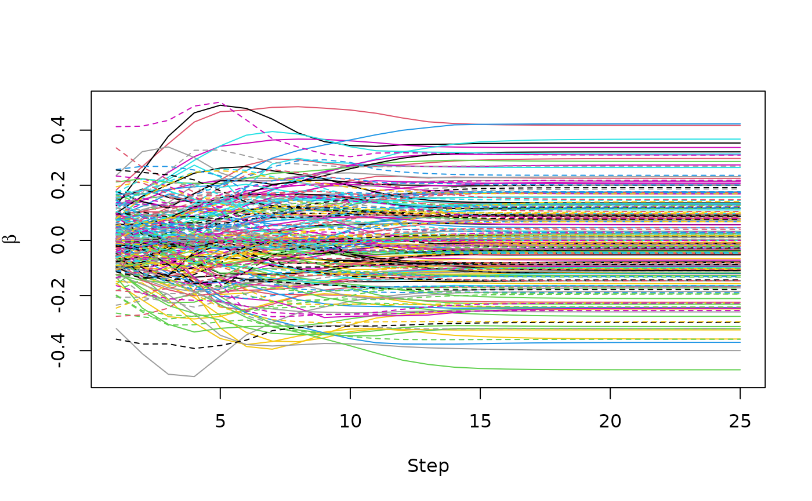
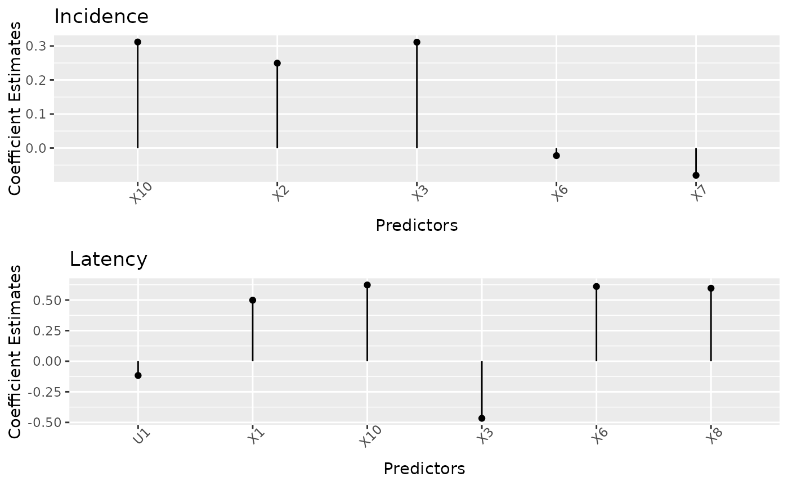

Estimating Cure Models in High Dimensions: A Guide with hdcuremodels
Source:vignettes/hdcuremodels.Rmd
hdcuremodels.RmdIntroduction
Recent medical advances have led to long-term overall or disease-free survival for at least a subset of treated subjects for various diseases, such that some patients’ overall survival is consistent with their population expected survival. Conventionally, we call the subset of subjects who are immune to the event of interest cured while all other subjects are susceptible to the event. When performing a time-to-event analysis to data that includes a subset of subjects who are cured, mixture cure models (MCMs) are a useful alternative to the Cox proportional hazards (PH) model. This is because the Cox PH model assumes a constant hazard applies to all subjects throughout the observed follow-up time which is violated when some subjects in the dataset are cured (Goldman 1991). Additionally, when cured subjects comprise a portion of the dataset, the survival function is improper.
To introduce notation for the MCM, consider that represents the probability density function for the overall population which is comprised of independent subgroups. Considering finite mixture models generally, the overall probability density can be decomposed . For MCMs, because one subgroup includes those immune to the event of interest (i.e., cured) and the other subgroup consists of those susceptible to the event of interest (i.e., uncured). For subjects , let represent those cured (c) and represent those who are susceptible or uncured (u), the finite mixture model for survival is . Letting represent the such that and recognizing , this MCM model simplifies to . Therefore, this model consists of two components: the incidence component which models susceptible versus cured and the latency component which models time-to-event for those susceptible. The latency or time-to-event function for susceptibles, , can be modeled in different ways, using for example a parametric, non-parametric, or semi-parametric survival model, whereas the incidence component is typically modelled using logistic regression.
Often, we want to estimate the effect of covariates on overall outcome and because different covariates may affect incidence versus latency portions of the MCM, we let represent the incidence covariates and represent the latency covariates, where and may or may not differ. The mixture cure survival function is given by Here, represents the probability of being susceptible, represents the probability of being cured, and represents the survival function (or latency) for those susceptible. Thus, the mixture cure model structure allows one to investigate the effect of covariates on two components of the model: incidence (susceptible versus cured) and latency (time-to-event for susceptibles). The incidence component is ordinarily modeled using logistic regression and we have parameters and vector of coefficients . The latency or time-to-event function for susceptibles can be modeled in different ways, using for example a parametric, a non-parametric, or semi-parametric survival model. Therefore, the vector of coefficients in the latency portion of the model may be accompanied by a shape and scale parameters if a Weibull or exponential model are fit.
The hdcuremodels R package was developed for fitting
penalized mixture cure models when there is a high-dimensional covariate
space, such as when high-throughput genomic data are used in modeling
time-to-event data when some subjects will not experience the event of
interest. The package includes the following functions for model
fitting: curegmifs, cureem,
cv_curegmifs, and cv_cureem. The functions
curegmifs and cureem are used for fitting a
penalized mixture cure model. The distinction between
curegmifs and cureem is the algorithm used and
the types of time-to-event models that can be fit. The
curegmifs function can be used to fit penalized Weibull and
penalized exponential models where the solution is obtained using the
generalized monotone incremental forward stagewise (GMIFS) method (Fu et
al, 2022). The cureem function can be used to fit penalized
Cox proportional hazards, Weibull, and exponential models where the
solution is obtained using the Expectation-Maximization (E-M) algorithm
(Archer et al, 2024). Both cv_curegmifs and
cv_cureem can be used for performing cross-validation for
model selection and for performing variable selection using the model-X
knockoff procedure with false discovery rate control (Candes et al,
2018). Aside from these model fitting functions, other functions have
been included for testing assumptions required for fitting a mixture
cure model. This vignette describes the syntax required for each of our
penalized mixture cure models.
Package description
The hdcuremodels and survival packages
should be loaded.
Data examples
The package includes two datasets: amltrain (Archer et
al, 2024) and amltest (Archer et al, 2024; Bamopoulos et al
2020). Both datasets include patients diagnosed with acute myeloid
leukemia (AML) who were cytogenetically normal at diagnosis along with
the same variables: cryr is the duration of complete
response (in years), relapse.death is a censoring variable
where 1 indicates the patient relapsed or died and 0 indicates the
patient was alive at last follow-up, and expression for 320 transcripts
measured using RNA-sequencing. The restriction to 320 transcripts was to
reduce run time. Therefore, results obtained with these data will not
precisely recapitulate those in the original publication (Archer et al,
2024). amltrain includes the 306 subjects that were used
for training the penalized MCM while amltest includes the
40 subjects that were used to test the penalized MCM.
We also included a function, generate_cure_data, that
allows the user to generate time-to-event data that includes a cured
fraction. Various parameters in this function will allow the user to
explore the impact of sample size (n), number of penalized
variables in the model (j), number of penalized variables
truly associated with the outcome (n_true), effect size
(referred to as the signal amplitude) of the penalized variables
(a), correlation among penalized variables
(rho), same_signs which if TRUE
indicates that the penalized incidence and latency coefficients should
have the same signs, number of unpenalized variables to coerce into the
model (nonp), itct_mean the incidence
intercept which controls the cure fraction, cens_ub the
upper bound for the Uniform[0, cens_ub] distribution for
generating censoring times, model which specifies the type
of regression model to use for generating event times,
alpha and lambda the numeric shape and rate
parameter values to specify when model = "weibull". When
a = 0 there is no relationship between the j
variables and the outcome. When rho = 0 the j
variables generated are uncorrelated while as rho
approaches 1 the variables generated are highly correlated. Note that
rho cannot be set equal to 1.
withr::local_seed(23)
data <- generate_cure_data(n = 200, j = 10, n_true = 5, a = 1.8, rho = 0.2)
training <- data$training
testing <- data$testing
head(training)
#> Time Censor U1 U2 X1 X2 X3
#> 1 0.3073157 1 -0.38092821 -1.1512299 0.2601014 -0.08664437 0.37085391
#> 2 9.9987949 0 0.27775133 0.3498232 -0.1313600 -0.14703388 0.11419749
#> 3 3.6234583 0 -0.09619218 -0.5486285 0.1070170 -0.55391727 -0.06514085
#> 4 1.7712017 0 1.00829091 0.4991512 0.4844801 0.78733289 -0.73085715
#> 5 1.9837930 0 1.35379114 -0.7851983 0.1338578 0.29613139 -0.26529766
#> 6 3.3668557 0 0.26424693 -0.2152782 -0.8450739 -0.65111161 -0.05986652
#> X4 X5 X6 X7 X8 X9
#> 1 0.80194354 0.10743195 -0.11153197 -0.43545676 -0.16495055 -0.6693095
#> 2 -0.59643655 -0.47107853 -0.69620473 -0.04103287 -0.21026165 0.4764264
#> 3 -0.70499475 0.47765142 0.60504607 1.01672281 0.71624649 0.2765438
#> 4 -0.15857135 0.41828145 0.17988730 -0.77016976 -0.05602750 0.2451666
#> 5 0.07002325 0.59285090 0.05405545 -0.18371201 0.69365239 -0.1808401
#> 6 -0.06927526 0.04030413 -0.01702558 0.41253565 0.04395145 -0.1051484
#> X10
#> 1 0.04322245
#> 2 -0.41536326
#> 3 0.30864241
#> 4 0.14679400
#> 5 -0.88188624
#> 6 -0.10867668
head(data$training_y)
#> [1] 1 1 0 0 0 0The training and testing data.frames have the same structure which
includes Time, Censor, and covariates. Covariates prefixed with “U” are
the unpenalized covariates and is equal to the value passed to
nonp (default is 2). Variables prefixed with “X” are the
penalized covariates and is equal to the value passed to j.
The training_y and testing_y vectors return
represent the true cure status of the subject (1 = uncured; 0 = cured).
To identify which penalized covariates are truly related to the
incidence and latency portions of the model, the user can inspect the
indices returned by nonzero_b and nonzero_beta
in the parameters component of the list.
data$parameters
#> $nonzero_b
#> [1] 2 3 6 8 10
#>
#> $nonzero_beta
#> [1] 1 3 6 8 10
#>
#> $b_u
#> [1] 0.1669904 -0.4123894
#>
#> $beta_u
#> [1] -0.3969023 0.3423121
#>
#> $b_p_nz
#> [1] 1.8 1.8 -1.8 -1.8 1.8
#>
#> $beta_p_nz
#> [1] 1.8 -1.8 1.8 1.8 1.8
#>
#> $itct
#> [1] 0.4489596In this example, the 2nd, 3rd, 6th, 8th, and 10th penalized covariates, corresponding to
names(training)[grep("^X", names(training))][data$parameters$nonzero_b]
#> [1] "X2" "X3" "X6" "X8" "X10"are truly associated with incidence while the 1st, 3rd, 6th, 8th, and 10th penalized covariates are truly associated with latency.
Assessing model assumptions for fitting a mixture cure model
The workflow for fitting a mixture cure model should include the
assessment of two assumptions: first, that a non-zero cure fraction is
present; second, that there is sufficient follow-up (Maller and Zhou,
1996). Inferential tests for assessing these two assumptions are
included in the hdcuremodels package. The functions
nonzerocure_test and sufficient_fu_test both
take a survfit object as their argument.
As can be seen from the Kaplan-Meier plot, there is a long-plateau
that does not drop down to zero. This may indicate the presence of a
cured fraction. We can test the null hypothesis that the cured fraction
is zero against the alternative hypothesis that the cured fraction is
not zero using nonzerocure_test (Maller and Zhou,
1996).
nonzerocure_test(km_train)
#> Warning in Surv(object$time, object$n.event): Invalid status value, converted
#> to NA
#> $proportion_susceptible
#> [1] 0.7146919
#>
#> $proportion_cured
#> [1] 0.2853081
#>
#> $p_value
#> [1] 0.001
#>
#> $time_95_percent_of_events
#> [1] 5.553847Given the small p-value we reject the null hypothesis and conclude
there is a non-zero cure fraction present. We can also extract the cured
fraction as the Kaplan-Meier estimate beyond the last observed event
(Goldman, 1991) using the cure_estimate function.
cure_estimate(km_train)
#> [1] 0.2853081This estimate requires sufficiently long follow-up which can be
tested using the sufficient_fu_test function (Maller and
Zhou, 1996).
sufficient_fu_test(km_train)
#> p_value n_n N
#> 1 4.825325e-06 12 306This function tests the null hypothesis of insufficient follow-up against the alternative that there is sufficient follow-up. Based on these results, we reject the null hypothesis and conclude there is sufficient follow-up. Having verified these two assumptions, we can now fit a mixture cure model.
Penalized mixture cure models
Fitting penalized mixture cure models using GMIFS
The primary function for fitting parametric models using the GMIFS
algorithm in the hdcuremodels package is
curegmifs. The function arguments are
args(curegmifs)
#> function (formula, data, subset, x_latency = NULL, model = c("weibull",
#> "exponential"), penalty_factor_inc = NULL, penalty_factor_lat = NULL,
#> epsilon = 0.001, thresh = 1e-05, scale = TRUE, maxit = 10000,
#> inits = NULL, verbose = TRUE, suppress_warning = FALSE, na.action = na.omit,
#> ...)
#> NULLThe curegmifs function accepts a model formula that
specifies the time-to-event outcome on the left-hand side of the
equation as a Surv object and any incidence predictor
variable(s) on the right-hand side of the equation. Note that at least
some incidence predictor variables must be included in order to fit a
penalized mixture cure model, otherwise, the survival
package functions should be used to fit time-to-event models that lack
an incidence component. The data parameter specifies the
name of the data.frame. Users should note that rows with missing data
are omitted (that is, only na.action = na.omit is
operational) therefore users may want to impute missing data prior to
calling this function. The optional subset parameter can be
used to limit model fitting to a subset of observations in the data. The
x_latency parameter specifies the variables to be included
in the latency portion of the model and can be either a matrix of
predictors, a model formula with the right hand side specifying the
latency variables, or the same data.frame passed to the
data parameter. Note that when using the model formula
syntax for x_latency it cannot handle
x_latency = ~ .. The curegmifs function can
fit either a either "weibull" or "exponential"
model, which is specified using the model parameter. Other
parameters include penalty_factor_inc which is an optional
numeric vector with length equal to the number of incidence variables,
where 1 indicates that variable should be penalized and 0 indicates that
variable is unpenalized (default is that all variables are penalized).
Likewise penalty_factor_lat is an optional numeric vector
with length equal to the number of latency variables, where 1 indicates
that variable should be penalized and 0 indicates that variable is
unpenalized (default is that all variables are penalized). Unpenalized
predictors are those that we want to coerce into the model (e.g., age)
so that no penalty is applied. By default the variables are centered and
scaled (scale = TRUE). The parameter epsilon
is the size of the coefficient update at each step (default = 0.001).
The GMIFS algorithm stops when either the difference between successive
log-likelihoods is less than thresh (default 1e-05) or the
algorithm has exceeded the maximum number of iterations
(maxit). Initialization is automatically provided by the
function though inits can be used to provide initial values
for the incidence intercept, unpenalized incidence and latency
coefficients, rate parameter, and shape parameter if fitting a Weibull
mixture cure model. By default verbose = TRUE so that
running information is echoed to the R console.
fitgmifs <- curegmifs(Surv(cryr, relapse.death) ~ .,
data = amltrain,
x_latency = amltrain, model = "weibull"
)Details of the GMIFS mixture cure model have been described in Fu et al, 2022.
Fitting penalized mixture cure models using E-M algorithm
The primary function for fitting penalized MCMs using the E-M
algorithm in the hdcuremodels package is
cureem. The function arguments are
args(cureem)
#> function (formula, data, subset, x_latency = NULL, model = c("cox",
#> "weibull", "exponential"), penalty = c("lasso", "MCP", "SCAD"),
#> penalty_factor_inc = NULL, penalty_factor_lat = NULL, thresh = 0.001,
#> scale = TRUE, maxit = NULL, inits = NULL, lambda_inc = 0.1,
#> lambda_lat = 0.1, gamma_inc = 3, gamma_lat = 3, na.action = na.omit,
#> ...)
#> NULLThe cureem function accepts a model formula that
specifies the time-to-event outcome on the left-hand side of the
equation as a Surv object and any incidence predictor
variable(s) on the right-hand side of the equation. Note that at least
some incidence predictor variables must be included in order to fit a
penalized mixture cure model, otherwise, the survival
package functions should be used to fit time-to-event models that lack
an incidence component. The data parameter specifies the
name of the data.frame and the optional subset parameter
can be used to limit model fitting to a subset of observations in the
data. The x_latency parameter specifies the variables to be
included in the latency portion of the model and can be either a matrix
of predictors, a model formula with the right hand side specifying the
latency variables, or the same data.frame passed to the
data parameter. Note that when using the model formula
syntax for x_latency it cannot handle
x_latency = ~ .. The cureem function can fit
one of three models which is specified using the model
parameter, which can be either "cox" (default),
"weibull", or "exponential". Other parameters
include penalty which can be "lasso",
"MCP", or "SCAD" when fitting a
"cox" model but must be "lasso" when fitting a
"weibull" or "exponential" model.
penalty_factor_inc is an optional numeric vector with
length equal to the number of incidence variables, where 1 indicates
that variable should be penalized and 0 indicates that variable is
unpenalized (default is that all variables are penalized). Likewise
penalty_factor_lat is an optional numeric vector with
length equal to the number of latency variables, where 1 indicates that
variable should be penalized and 0 indicates that variable is
unpenalized (default is that all variables are penalized). Unpenalized
predictors are those that we want to coerce into the model (e.g., age)
so that no penalty is applied. The iterative process stops when the
differences between successive expected penalized complete-data
log-likelihoods for both incidence and latency components are less than
thresh (default = 0.001). By default the variables are
centered and scaled (scale = TRUE). The user can specify
the maximum number of passes over the data for each lambda using
maxit, which defaults to 100 when
penalty = "lasso" and 1000 when either
penalty = "MCP" or penalty = "SCAD".
Initialization is automatically provided by the function though
inits can be used to provide initial values for the
incidence intercept, unpenalized indicidence and latency coefficients,
rate parameter (for Weibull and exponential MCM), and shape parameter
(for Weibull MCM). By default verbose = TRUE so that
running information is echoed to the R console. The user can also
specify the penalty parameter for the incidence
(lambda_inc) and latency (lambda_lat) portions
of the model and the
penalty when MCP or SCAD is used (gamma_inc and
gamma_lat).
Details of the E-M MCM have been described in the Supplementary Material of Archer et al, 2024.
Cross-validation
There is a function for performing cross-validation (CV)
corresponding to each of the two optimization methods. The primary
function for fitting cross-validated penalized MCMs using the E-M
algorithm in the hdcuremodels package is
cv_cureem. The function arguments are
args(cv_cureem)
#> function (formula, data, subset, x_latency = NULL, model = c("cox",
#> "weibull", "exponential"), penalty = c("lasso", "MCP", "SCAD"),
#> penalty_factor_inc = NULL, penalty_factor_lat = NULL, fdr_control = FALSE,
#> fdr = 0.2, grid_tuning = FALSE, thresh = 0.001, scale = TRUE,
#> maxit = NULL, inits = NULL, lambda_inc_list = NULL, lambda_lat_list = NULL,
#> nlambda_inc = NULL, nlambda_lat = NULL, gamma_inc = 3, gamma_lat = 3,
#> lambda_min_ratio_inc = 0.1, lambda_min_ratio_lat = 0.1, n_folds = 5,
#> measure_inc = c("c", "auc"), one_se = FALSE, cure_cutoff = 5,
#> parallel = FALSE, seed = NULL, verbose = TRUE, na.action = na.omit,
#> ...)
#> NULLThe cv_cureem function accepts a model formula that
specifies the time-to-event outcome on the left-hand side of the
equation as a Surv object and any incidence predictor
variable(s) on the right-hand side of the equation. Note that at least
some incidence predictor variables must be included in order to fit a
penalized mixture cure model, otherwise, the survival
package functions should be used to fit time-to-event models that lack
an incidence component. The data parameter specifies the
name of the data.frame and the optional subset parameter
can be used to limit model fitting to a subset of observations in the
data. The x_latency parameter specifies the variables to be
included in the latency portion of the model and can be either a matrix
of predictors, a model formula with the right hand side specifying the
latency variables, or the same data.frame passed to the
data parameter. Note that when using the model formula
syntax for x_latency it cannot handle
x_latency = ~ .. The cv_cureem function can
fit one of three models which is specified using the model
parameter, which can be either "cox" (default),
"weibull", or "exponential". Other parameters
include penalty which can be "lasso",
"MCP", or "SCAD" when fitting a
"cox" model but must be "lasso" when fitting a
"weibull" or "exponential" model.
penalty_factor-inc is an optional numeric vector with
length equal to the number of incidence variables, where 1 indicates
that variable should be penalized and 0 indicates that variable is
unpenalized (default is that all variables are penalized). Likewise
penalty_factor_lat is an optional numeric vector with
length equal to the number of latency variables, where 1 indicates that
variable should be penalized and 0 indicates that variable is
unpenalized (default is that all variables are penalized). Unpenalized
predictors are those that we want to coerce into the model (e.g., age)
so that no penalty is applied. The user can choose to use the model-X
knock-off procedure to control the false discovery rate (FDR) by
specifying fdr_control = TRUE and optionally changing the
FDR threshold (default fdr = 0.20) (Candes et al, 2018). To
identify the optimal
for the incidence and latency portions of the model, the user can set
grid_tuning = TRUE (default is that one value for
is used in both portions of the model). Other useful parameters for the
cross-validation function include n_folds, an integer
specifying the number of folds for the k-fold cross-validation procedure
(default is 5); measure_inc which specifies the evaluation
criterion used in selecting the optimal penalty which can be
"c" for the C-statistic using cure status weighting (Asano
and Hirakawa, 2017) or "auc" for cure prediction using mean
score imputation (Asano et al, 2014) (default is
measure_inc = "c"); one_se is a logical
variable that if TRUE then the one standard error rule is used which
selects the most parsimonious model having evaluation criterion no more
than one standard error worse than that of the best evaluation criterion
(default is FALSE); and cure_cutoff which is a numeric
value representing the cutoff time used to represent subjects not
experiencing the event by this time are cured which is used to produce a
proxy for the unobserved cure status when calculating the C-statistic
and AUC (default is 5). If the logical parameter parallel
is TRUE, cross-validation will be performed using parallel processing
which requires the foreach and doMC R
packages. To foster reproducibility of cross-validation results,
seed can be set to an integer.
As with cureem, the iterative process stops when the
differences between successive expected penalized complete-data
log-likelihoods for both incidence and latency components are less than
thresh (default = 0.001). By default the variables are
centered and scaled (scale = TRUE). The user can specify
the maximum number of passes over the data for each lambda using
maxit, which defaults to 100 when
penalty = "lasso" and 1000 when either
penalty = "MCP" or penalty = "SCAD".
Initialization is automatically provided by the function though
inits can be used to provide initial values for the
incidence intercept, unpenalized indicidence and latency coefficients,
rate parameter (for Weibull and exponential MCM), and shape parameter
(for Weibull MCM). When model = "cox", inits
should also include a numeric vector for the latency survival
probabilities. Optionally, the user can supply a numeric vector to
search for the optimal penalty for the incidence portion
(lambda_inc_list) and a numeric vector to search for the
optimal penalty for the latency portion (lambda_lat_list)
of the model. By default the number of values to search for the optimal
incidence penalty is 10 which can be changed by specifying an integer
for nlambda_int and similarly for latency by specifying an
integer for nlambda_lat. If penalty is either
"MCP" or "SCAD", the user can optionally
specify the penalization parameter
for the incidence (gamma_inc) and latency
(gamma_lat) portions of the model. By default
verbose = TRUE so that running information is echoed to the
R console. The user can also specify the penalty parameter for the
incidence (lambda_inc) and latency
(lambda_lat) portions of the model and the
penalty when MCP or SCAD is used (gamma_inc and
gamma_lat).
fit_cv <- cv_cureem(Surv(Time, Censor) ~ .,
data = training,
x_latency = training, fdr_control = FALSE,
grid_tuning = FALSE, nlambda_inc = 10,
nlambda_lat = 10, n_folds = 2, seed = 23,
verbose = TRUE
)
#> Fold 1 out of 2 training...
#> Fold 2 out of 2 training...
#> Warning: from glmnet C++ code (error code -1); Convergence for 1th lambda value
#> not reached after maxit=100000 iterations; solutions for larger lambdas
#> returned
#> Warning in getcoef(fit, nvars, nx, vnames): an empty model has been returned;
#> probably a convergence issue
#> Warning: from glmnet C++ code (error code -1); Convergence for 1th lambda value
#> not reached after maxit=100000 iterations; solutions for larger lambdas
#> returned
#> Warning in getcoef(fit, nvars, nx, vnames): an empty model has been returned;
#> probably a convergence issue
#> Warning: from glmnet C++ code (error code -1); Convergence for 1th lambda value
#> not reached after maxit=100000 iterations; solutions for larger lambdas
#> returned
#> Warning in getcoef(fit, nvars, nx, vnames): an empty model has been returned;
#> probably a convergence issue
#> Warning: from glmnet C++ code (error code -1); Convergence for 1th lambda value
#> not reached after maxit=100000 iterations; solutions for larger lambdas
#> returned
#> Warning in getcoef(fit, nvars, nx, vnames): an empty model has been returned;
#> probably a convergence issue
#> Warning: from glmnet C++ code (error code -1); Convergence for 1th lambda value
#> not reached after maxit=100000 iterations; solutions for larger lambdas
#> returned
#> Warning in getcoef(fit, nvars, nx, vnames): an empty model has been returned;
#> probably a convergence issue
#> Warning: from glmnet C++ code (error code -1); Convergence for 1th lambda value
#> not reached after maxit=100000 iterations; solutions for larger lambdas
#> returned
#> Warning in getcoef(fit, nvars, nx, vnames): an empty model has been returned;
#> probably a convergence issue
#> Warning: from glmnet C++ code (error code -1); Convergence for 1th lambda value
#> not reached after maxit=100000 iterations; solutions for larger lambdas
#> returned
#> Warning in getcoef(fit, nvars, nx, vnames): an empty model has been returned;
#> probably a convergence issue
#> Warning: from glmnet C++ code (error code -1); Convergence for 1th lambda value
#> not reached after maxit=100000 iterations; solutions for larger lambdas
#> returned
#> Warning in getcoef(fit, nvars, nx, vnames): an empty model has been returned;
#> probably a convergence issue
#> Warning: from glmnet C++ code (error code -1); Convergence for 1th lambda value
#> not reached after maxit=100000 iterations; solutions for larger lambdas
#> returned
#> Warning in getcoef(fit, nvars, nx, vnames): an empty model has been returned;
#> probably a convergence issue
#> Warning: from glmnet C++ code (error code -1); Convergence for 1th lambda value
#> not reached after maxit=100000 iterations; solutions for larger lambdas
#> returned
#> Warning in getcoef(fit, nvars, nx, vnames): an empty model has been returned;
#> probably a convergence issue
#> Warning: from glmnet C++ code (error code -1); Convergence for 1th lambda value
#> not reached after maxit=100000 iterations; solutions for larger lambdas
#> returned
#> Warning in getcoef(fit, nvars, nx, vnames): an empty model has been returned;
#> probably a convergence issue
#> Warning: from glmnet C++ code (error code -1); Convergence for 1th lambda value
#> not reached after maxit=100000 iterations; solutions for larger lambdas
#> returned
#> Warning in getcoef(fit, nvars, nx, vnames): an empty model has been returned;
#> probably a convergence issue
#> Warning: from glmnet C++ code (error code -1); Convergence for 1th lambda value
#> not reached after maxit=100000 iterations; solutions for larger lambdas
#> returned
#> Warning in getcoef(fit, nvars, nx, vnames): an empty model has been returned;
#> probably a convergence issue
#> Warning: from glmnet C++ code (error code -1); Convergence for 1th lambda value
#> not reached after maxit=100000 iterations; solutions for larger lambdas
#> returned
#> Warning in getcoef(fit, nvars, nx, vnames): an empty model has been returned;
#> probably a convergence issue
#> Warning: from glmnet C++ code (error code -1); Convergence for 1th lambda value
#> not reached after maxit=100000 iterations; solutions for larger lambdas
#> returned
#> Warning in getcoef(fit, nvars, nx, vnames): an empty model has been returned;
#> probably a convergence issue
#> Selected lambda for incidence: 0.052
#> Selected lambda for latency: 0.052
#> Maximum C-statistic: 0.720719812324126
#> Fitting a final model...Notice in the previous section describing cureem that
values were supplied for the
penalty parameters for both the incidence and latency portions of the
model using lambda_inc and lambda_lat. Those
values were determined from the following repeated 10-fold
cross-validation where the optimal
for the incidence portion was identified by fitting the models to
maximize the AUC while the optimal
for the latency portion was identified by fitting the models to maximize
the C-statistic. After the CV procedure the mode for each was taken.
Because the run time for the repeated 10-fold CV procedure was 5.65
hours, this code chunk is not evaluated herein.
lambda_inc <- lambda_lat <- rep(0, 100)
for (k in 1:100) {
print(k)
coxem_auc_k <- cv_cureem(Surv(cryr, relapse.death) ~ .,
data = amltrain, x_latency = amltrain,
model = "cox", penalty = "lasso",
scale = TRUE, grid_tuning = TRUE,
nfolds = 10, nlambda_inc = 20,
nlambda_lat = 20, verbose = FALSE,
parallel = TRUE, measure_inc = "auc"
)
lambda_inc[k] <- coxem_auc_k$selected_lambda_inc
coxem_c_k <- cv_cureem(Surv(cryr, relapse.death) ~ .,
data = amltrain,
x_latency = amltrain, model = "cox",
penalty = "lasso", scale = TRUE,
grid_tuning = TRUE, nfolds = 10,
nlambda_inc = 20, nlambda_lat = 20,
verbose = FALSE, parallel = TRUE,
measure_inc = "c"
)
lambda_lat[k] <- coxem_c_k$selected_lambda_lat
}
table(lambda_inc)
table(lambda_lat)The primary function for fitting cross-validated penalized MCMs using
the GMIFS algorithm in the hdcuremodels package is
cv_curegmifs. The function arguments are
args(cv_curegmifs)
#> function (formula, data, subset, x_latency = NULL, model = c("weibull",
#> "exponential"), penalty_factor_inc = NULL, penalty_factor_lat = NULL,
#> fdr_control = FALSE, fdr = 0.2, epsilon = 0.001, thresh = 1e-05,
#> scale = TRUE, maxit = 10000, inits = NULL, n_folds = 5, measure_inc = c("c",
#> "auc"), one_se = FALSE, cure_cutoff = 5, parallel = FALSE,
#> seed = NULL, verbose = TRUE, na.action = na.omit, ...)
#> NULLThe cv_curegmifs function accepts a model formula that
specifies the time-to-event outcome on the left-hand side of the
equation as a Surv object and any incidence predictor
variable(s) on the right-hand side of the equation. Note that at least
some incidence predictor variables must be included in order to fit a
penalized mixture cure model, otherwise, the survival
package functions should be used to fit time-to-event models that lack
an incidence component. The data parameter specifies the
name of the data.frame and the optional subset parameter
can be used to limit model fitting to a subset of observations in the
data. The x_latency parameter specifies the variables to be
included in the latency portion of the model and can be either a matrix
of predictors, a model formula with the right hand side specifying the
latency variables, or the same data.frame passed to the
data parameter. Note that when using the model formula
syntax for x_latency it cannot handle
x_latency = ~ .. The cv_curegmifs function can
fit either a either "weibull" or "exponential"
model, which is specified using the model parameter. Other
parameters include penalty_factor_inc which is an optional
numeric vector with length equal to the number of incidence variables,
where 1 indicates that variable should be penalized and 0 indicates that
variable is unpenalized (default is that all variables are penalized).
Likewise penalty_factor_lat is an optional numeric vector
with length equal to the number of latency variables, where 1 indicates
that variable should be penalized and 0 indicates that variable is
unpenalized (default is that all variables are penalized). Unpenalized
predictors are those that we want to coerce into the model (e.g., age)
so that no penalty is applied. The user can choose to use the model-X
knock-off procedure to control the false discovery rate (FDR) by
specifying fdr_control = TRUE and optionally changing the
FDR threshold (default fdr = 0.20) (Candes et al, 2018). By
default the variables are centered and scaled
(scale = TRUE). The parameter epsilon is the
size of the coefficient update at each step (default = 0.001). The GMIFS
algorithm stops when either the difference between successive
log-likelihoods is less than thresh (default 1e-05) or the
algorithm has exceeded the maximum number of iterations
(maxit). Initialization is automatically provided by the
function though inits can be used to provide initial values
for the incidence intercept, unpenalized indicidence and latency
coefficients, rate parameter, and shape parameter if fitting a Weibull
mixture cure model. Other useful parameters for the cross-validation
function include n_folds, an integer specifying the number
of folds for the k-fold cross-validation procedure (default is 5);
measure_inc which specifies the evaluation criterion used
in selecting the optimal penalty which can be "c" for the
C-statistic using cure status weighting (Asano and Hirakawa, 2017) or
"auc" for cure prediction using mean score imputation
(Asano et al, 2014) (default is measure_inc = "c");
one_se is a logical variable that if TRUE then the one
standard error rule is used which selects the most parsimonious model
having evaluation criterion no more than one standard error worse than
that of the best evaluation criterion (default is FALSE); and
cure_cutoff which is a numeric value representing the
cutoff time used to represent subjects not experiencing the event by
this time are cured which is used to produce a proxy for the unobserved
cure status when calculating the C-statistic and AUC (default is 5). If
the logical parameter parallel is TRUE, cross-validation
will be performed using parallel processing which requires the
foreach and doMC R packages. To foster
reproducibility of cross-validation results, seed can be
set to an integer. By default verbose = TRUE so that
running information is echoed to the R console.
Other Package Functions
The four modeling functions cureem,
curegmifs, cv_cureem, and
cv_curegmifs all result in an object of class
mixturecure. Generic functions for resulting
mixturecure objects are available for extracting meaningful
results. The print function prints the first several
incidence and latency coefficients and the rate (exponential and
Weibull) and alpha (Weibull) when fitting a parametric MCM and returns
the fitted object invisible to the user.
print(fitem)The summary function prints the following output for a
model fit using either cureem or
curegmifs:
- the number of non-zero coefficients in the incidence portion of the fitted mixture cure model when using the minimum AIC
- the number of non-zero coefficients in the latency portions of the fitted mixture cure model when using the minimum AIC
- the step and value that maximizes the log-likelihood;
- the step and value that minimizes the AIC;
- the step and value that minimizes the modified AIC (mAIC);
- the step and value that minimizes the corrected AIC (cAIC);
- the step and value that minimizes the BIC;
- the step and value that minimizes the modified BIC (mBIC);
- the step and value that minimizes the extended BIC (EBIC).
summary(fitem)
#> Mixture cure model fit using the EM algorithm
#> Number of non-zero incidence covariates at minimum AIC: 112
#> Number of non-zero latency covariates at minimum AIC: 88
#> Optimal step for selected information criterion: EM algorithm
#> at step = 25 logLik = -1113.55863570096
#> at step = 12 AIC = 2634.70486570024
#> at step = 12 mAIC = 5510.86023917953
#> at step = 12 cAIC = 3415.51255800793
#> at step = 12 BIC = 3383.14547119267
#> at step = 12 mBIC = 5423.36534491666
#> at step = 12 EBIC = 3778.04299438322The summary function prints the following output for a
model fit using either cv_cureem or
cv_curegmifs when fdr_control = FALSE:
- the number of non-zero coefficients in the incidence portion of the fitted mixture cure model
- the number of non-zero coefficients in the latency portions of the fitted mixture cure model
summary(fit_cv)
#> Mixture cure model fit using the EM algorithm
#> using cross-validation
#> Number of non-zero incidence covariates: 5
#> Number of non-zero latency covariates: 6The summary function prints the following output for a
model fit using either cv_cureem or
cv_curegmifs when fdr_control = TRUE:
- Number of non-zero incidence covariates
- Number of non-zero latency covariates
For a cureem or curegmifs fitted
mixturecure object, the plot function provides
a trace of the coefficients’ paths by default. Because it is common for
the user to include at least some of the same variables in both the
incidence and latency portions of the MCM, when
label = TRUE a legend is provided with variables included
in the incidence portion prefixed with “I” and variables included in the
latency portion prefixed with “L.” Alternatively, the type
parameter can be used to specify any of the information criterion
(“logLik”, “AIC”, “cAIC”, “mAIC”, “BIC”, “mBIC”, “EBIC”). For a
cv_cureem or cv_curegmifs fitted
mixturecure object, a lollipop plot of the estimated
incidence and latency coefficients is produced. The height of each
lollipop represents the estimated coefficient for the optimal
cross-validated model.
plot(fitem)
plot(fitem, type = "cAIC")
plot(fit_cv)
Coefficient estimates can be extracted from the fitted model using
the coef for any of these model criteria (“logLik”, “AIC”,
“cAIC”, “mAIC”, “BIC”, “mBIC”, “EBIC”) or by specifying the step at
which the model is desired by specifying the model.select
parameter. For example,
coef_cAIC <- coef(fitem, model_select = "cAIC")is equivalent to
coef_12 <- coef(fitem, model_select = 12)as demonstrated by comparing the results in each object:
names(coef_cAIC)
#> [1] "b0" "beta_inc" "beta_lat"
all.equal(coef_cAIC$rate, coef_12$rate)
#> [1] TRUE
all.equal(coef_cAIC$alpha, coef_12$alpha)
#> [1] TRUE
all.equal(coef_cAIC$b0, coef_12$b0)
#> [1] TRUE
all.equal(coef_cAIC$beta_inc, coef_12$beta_inc)
#> [1] TRUE
all.equal(coef_cAIC$beta_lat, coef_12$beta_lat)
#> [1] TRUEAgain, there are two sets of coefficients: those in the incidence
portion of the model (beta_inc) and those in the latency
portion of the model (beta_lat). Additionally,
b0 is the intercept in the incidence portion of the model.
Depending on the model fit, coef will return
rate (exponential and Weibull) and alpha
(Weibull).
Predictions can be extracted at a given step or information criterion
(“logLik”, “AIC”, “cAIC”, “mAIC”, “BIC”, “mBIC”, “EBIC”) using the
predict function with model_select
specified.
train_predict <- predict(fitem, model_select = "cAIC")This returns three objects: p_uncured is the estimated
probability of being susceptible
(),
linear_latency is
,
while latency_risk applies high risk and low risk labels
using zero as the cutpoint from the linear_latency vector.
Perhaps we want to apply the 0.5 threshold to p_uncured to
create Cured and Susceptible labels.
p_group <- ifelse(train_predict$p_uncured < 0.50, "Cured", "Susceptible")Then we can assess how well our MCM identified patients likely to be cured from those likely to be susceptible visually by examining the Kaplan-Meier curves.
We can assess how well our MCM identified higher versus lower risk patients among those predicted to be susceptible visually by examining the Kaplan-Meier curves.
km_suscept <- survfit(Surv(cryr, relapse.death) ~ train_predict$latency_risk, data = amltrain,
subset = (p_group == "Susceptible"))Of course, we expect our model to perform well on our training data.
We can also assess how well our fitted MCM performs using the
independent test set amltest. In this case we use the
predict function with newdata specified.
test_predict <- predict(fitem, newdata = amltest, model_select = "cAIC")Again we will apply the 0.5 threshold to p_uncured to
create Cured and Susceptible labels.
test_p_group <- ifelse(test_predict$p_uncured < 0.50, "Cured", "Susceptible")Then we can assess how well our MCM identified patients likely to be cured from those likely to be susceptible visually by examining the Kaplan-Meier curves.
km_suscept_test <- survfit(Surv(cryr, relapse.death) ~ test_predict$latency_risk,
data = amltest, subset = (test_p_group == "Susceptible"))The hdcuremodels package also includes two functions for
assessing the performance of MCMs. The ability of the MCM to
discriminate between those cured
()
versus those susceptible
()
can be assessed by calculating the mean score imputation area under the
curve using the auc_mcm function (Asano et al, 2014). In a
MCM, when
we know that the subject experienced the event. However, when
either the subject was cured or the subject would have experienced the
event if followed longer than their censoring time. Therefore, for a
cure_cutoff
(default is 5) the outcome
is defined as
The mean score imputation AUC lets
for those subjects with a missing outcome. The C-statistic for MCMs was
adapted to weight patients by their outcome (cured, susceptible,
censored) and is available in the concordance_mcm function
(Asano & Hirakawa, 2017). In both functions, if newdata
is not specified, the training data are used.
auc_mcm(fitem, model_select = "cAIC")
#> [1] 0.9690505
auc_mcm(fitem, newdata = amltest, model_select = "cAIC")
#> [1] 0.8050218
concordance_mcm(fitem, model_select = "cAIC")
#> [1] 0.8546212
concordance_mcm(fitem, newdata = amltest, model_select = "cAIC")
#> [1] 0.6987626Other generic functions return the number of observations for the
training data nobs, the log-likehood at the selected step
logLik, the family of the mixture cure model
family, and the model formula and data used for training
the incidence and latency components formula.
Comparison to other mixture cure modeling packages
Other R packages that can be used for fitting MCMs include:
-
cuRe(Jakobsen, 2023) can be used to fit parametric MCMs on a relative survival scale; -
CureDepCens(Schneider and Grandemagne dos Santos, 2023) can be used to fit piecewise exponential or Weibull model with dependent censoring; -
curephEM(Hou and Ren, 2024) can be used to fit a MCM where the latency is modeled using a Cox PH model; -
flexsurvcure(Amdahl, 2022) can be used to fit parametric mixture and non-mixture cure models; -
geecure(Niu and Peng, 2018) can be used to fit marginal MCM for clustered survival data; -
GORCure(Zhou et al, 2017) can be used to fit generalized odds rate MCM with interval censored data; -
mixcure(Peng, 2020) can be used to fit non-parametric, parametric, and semiparametric MCMs; -
npcure(López-de-Ullibarri and López-Cheda, 2020) can be used to non-parametrically estimate incidence and latency; -
npcurePK(Safari et al, 2023) can be used to non-parametrically estimate incidence and latency when cure is partially observed; -
penPHcure(Beretta and Heuchenne, 2019) can be used to fit semi-parametric PH MCMs with time-varying covariates; and -
smcure(Cai et al 2022) can be used to fit semi-parametric (PH and AFT) MCMs.
None of these packages are capable of handling high-dimensional
datasets. Only penPHcure includes LASSO penalty to perform
variable selection for scenarios when the sample size exceeds the number
of predictors.
Conclusions
Our hdcuremodels R package can be used to model a
censored time-to-event outcome when a cured fraction is present, and
because penalized models are fit, our hdcuremodels package
can accommodate datasets where the number of predictors exceeds the
sample size. The user can fit a model using one of two different
optimization methods (E-M or GMIFS) and can choose to perform
cross-valiation with or without FDR control. The modeling functions are
flexible in that there is no requirement for the predictors to be the
same in the incidence and latency components of the model. The package
also includes functions for testing mixture cure modeling assumptions.
Generic functions for resulting mixturecure objects include
print, summary, coef,
plot, and predict can be used to extract
meaningful results from the fitted model. Additionally,
auc_mcm and concordance_mcm were specifically
tailored to provide model performance statistics of the fitted MCM.
Finally, our previous paper demonstrated that our GMIFS and E-M
algorithms outperformed existing methods with respect to both variable
selection and prediction (Fu et al, 2022).
References
- Amdahl, J. (2022) flexsurvcure: Flexible Parametric Cure Models. R package version 1.3.1, https://CRAN.R-project.org/package=flexsurvcure.
- Archer, K.J.; Fu, H.; Mrozek, K.; Nicolet, D.; Mims, A.S.; Uy, G.L.; Stock, W.; Byrd, J.C.; Hiddenmann, W.; Braess, J.; Spiekermann, K.; Metzeler, K.H.; Herold, T.; Eisfeld, A.K. Identifying long-term survivors and those at higher or lower risk of relapse among patients with cytogenetically normal acute myeloid leukemia using a high-dimensional mixture cure model. Journal of Hematology and Oncology 2024, 17(1), 28.
- Asano, J.; Hirakawa, A.; Hamada, C. Assessing the prediction accuracy of cure in the Cox proportional hazards cure model: An application to breast cancer data. Pharmaceutical Statistics 2014, 13, 357–363.
- Asano, J.; Hirakawa, A. Assessing the prediction accuracy of a cure model for censored survival daa with long-term survivors: Application to breast cancer data. Journal of Biopharmaceutical Statistics 2017, 27(6), 918–932.
- Bamopoulos, S.A.; Batcha, A.M.N.; Jurinovic, V.; Rothenberg-Thurley, M.; Janke, H.; Ksienzyk, B.; et al. Clinical presentation and differential splicing of SRSF2, U2AF1, and SF3B1 mutations in patients with acute myeloid leukemia. Leukemia 2020, 34, 2621–34.
- Beretta, A.; Heuchenne, C. (2019) penPHcure: Variable Selection in PH Cure Model with Time-Varying Covariates. R package version 1.0.2, https://CRAN.R-project.org/package=penPHcure.
- Candes, E.; Fan, Y.; Janson, L.; Lv, J. Panning for gold: ‘model-X’ knockoffs for high dimensional controlled variable selection. Journal of the Royal Statistical Society Series B Stat Methodology 2018, 80(3), 551–577.
- Cai, C.; Zou, Y.; Peng, Y.; Zhang, J. (2022). smcure: Fit Semiparametric Mixture Cure Models. R package version 2.1, https://CRAN.R-project.org/package=smcure.
- Fu, H.; Nicolet, D.; Mrozek, K.; Stone, R.M.; Eisfeld, A.K.; Byrd, J.C.; Archer, K.J. Contolled variable selection in Weibull mixture cure models for high-dimensional data. Statistics in Medicine 2022, 41(22), 4340–4366.
- Goldman, A. The cure model and time confounded risk in the analysis of survival and other timed events. Journal of Clinical Epidemiology 1991, 44(12), 1327–1340.
- Hou, J.; Ren, E. (2024) curephEM: NPMLE for Logistic-Cox Cure-Rate Model. R package version 0.3.0, https://CRAN.R-project.org/package=curephEM.
- Jakobsen, L.H. (2023) cuRe: Parametric Cure Model Estimation. R package version 1.1.1, https://CRAN.R-project.org/package=cuRe.
- López-de-Ullibarri I, López-Cheda A, Jácome M (2020). npcure: Nonparametric Estimation in Mixture Cure Models. R package version 0.1-5, https://CRAN.R-project.org/package=npcure.
- Maller, R.A.; Zhou, X. Survival Analysis with Long-Term Survivors John Wiley & Sons, 1996.
- Niu, Y.; Peng, Y. (2018) geecure: Marginal Proportional Hazards Mixture Cure Models with Generalized Estimating Equations. R package version 1.0-6, https://CRAN.R-project.org/package=geecure.
- Peng, Y. (2020) mixcure: Mixture Cure Models. R package version 2.0, https://CRAN.R-project.org/package=mixcure.
- Safari, W.; López-de-Ullibarri, I.; Jácome, M. (2023) npcurePK: Mixture Cure Model Estimation with Cure Status Partially Known. R package version 1.0-2, https://CRAN.R-project.org/package=npcurePK.
- Schneider, S.; Grandemagne dos Santos, G. (2023) CureDepCens: Dependent Censoring Regression Models with Cure Fraction. R package version 0.1.0, https://CRAN.R-project.org/package=CureDepCens.
- Zhou, J.; Zhang, J.; Lu, W. (2017) GORCure: Fit Generalized Odds Rate Mixture Cure Model with Interval Censored Data. R package version 2.0, https://CRAN.R-project.org/package=GORCure.